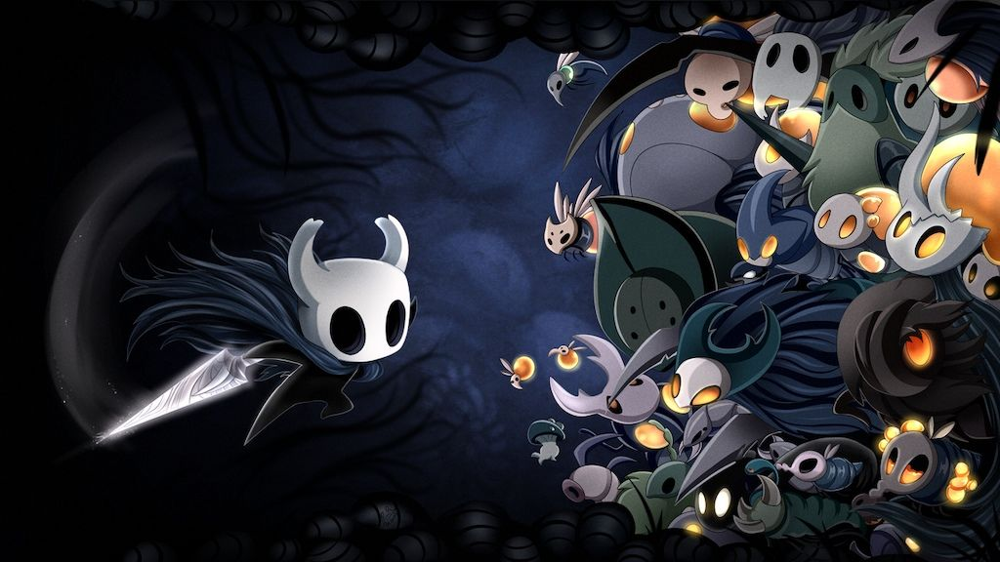

Welcome to Spooky Forums!
Do you like spooky video games?
Spooky forums is a video game forum for all things spooky. Visit our games page to see our spooky game collection. Read the reviews for a game you were thinking about checking out or write a review for your favorite or least favorite games. Don't see your favorite spooky game? Recommend a game by going to our contact page!
Featured Games
Hollow Knight

Resident Evil 2

Pocket Mirror

Latest News
Hollow Knight: Silksong Revealed
Hollow Knight: Silksong is the epic sequel to Hollow Knight, the award winning action-adventure of bugs and heroes. As the lethal hunter Hornet, journey to all-new lands, discover new powers, battle vast hordes of bugs and beasts and uncover ancient secrets tied to your nature and your past.
Little Nightmares
With Little Nightmares 2 recently announced at GamesCom 2019, there's no better time to play the original before its sequel releases in 2020. Little Nightmares is a Tim Burton-esque puzzle-platformer first released in 2017 that follows a small, hungry child in a yellow raincoat known only as Six. The child is trapped in a horrifying, mostly underwater island location called the Maw, which is home to numerous strange and deplorable creatures. From a long-armed blind janitor to a chilling, shadowy Lady, Six must avoid capture while navigating her way out of the Maw.
Resident Evil 2 Remake
Rebuilt from the ground up, Capcom's survival horror classic returns better and bloodier than ever. Featuring a stunning visual presentation, updated controls and immersive audio design, Resident Evil 2 brings the zombie-infested Raccoon City Police Department to life (and death) like never before. Offering a bone-chilling blend of cryptic puzzles, resource conservation and encounters with infected freaks, this one is best enjoyed with the lights down and the volume up.